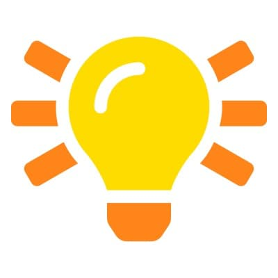

Dr. Axel Rauschmayer
I specialize in JavaScript, TypeScript and web development.
I have been developing web applications since 1995. In 1999, I was
a technical manager
Since 2011, I have been blogging at 2ality and
I live in Munich, Germany, and speak German, English, French, and
Spanish. My Web development
I’m publishing the following resources about JavaScript,
TypeScript and web
Light bulbs: steps towards a positive future
There are many ideas and projects that make me hopeful for the
future. To change our Topics: degrowth, agriculture, urbanism, education, democracy, income, technology, etc.
Language tales: languages and language learningLanguages I’m currently interested in:
I’m writing about these languages and language learning here:
Other interests of mine
Contact
|